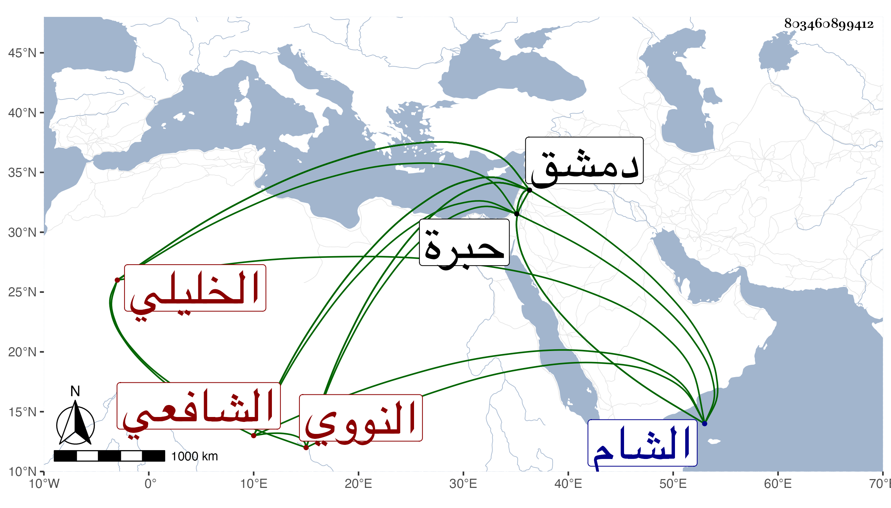

0902Sakhawi.DawLamic.ITO20230111-ara1.EIS1600.803460899412
Biography ID: 803460899412
944
سعد بن يوسف بن إسماعيل بن يوسف بن يعقوب بن سرور بن نصر ابن محمد سعد الدين بن صدر الدين النووي ثم الخليلي الشافعي نزيل دمشق . ولد في رمضان سنة تسع وعشرين وسبعمائة ، وقدم دمشق بعد الأربعين وسمع من عبد الرحيم بن أبي اليسر والشمس بن نباتة والذهبي ونحوهم ، ومما سمعه على الذهبي عوالي الحمادين له واشتغل بالعلم كثيرا على التاج المراكشي وابن كثير وقرأ عليه مختصره في علوم الحديث وأذن له وغيرهما كابن قاضي شهبة حتى برع وفاق وصار من العلماء الحذاق وأفتى ، وتصدر بجامع بني أمية فدرس به وكذا درس بأم الصالح وأعاد بالناصرية وولي إمامة المدرسة القيمرية ، وكان أسن من بقي بالشام من الشافعية ، وناب في الحكم بدمشق ، وحدث وولي قضاء الخليل بعد كائنة تمر لنك فمات به في سادس عشر جمادى الأولى سنة خمس . قال ابن حجي كان ذا ثروة جيدة فاحترقت داره في الفتنة وأخذ ماله فافتقر واحتاج أن يجلس مع الشهود وولي قضاء بعض القرى ثم قضاء بلد الخليل ، وممن روى لنا عنه التقي بن فهد وذكره في معجمه . وكذا ذكره شيخنا في إنبائه ومعجمه والمقريزي في عقوده وآخرون .
